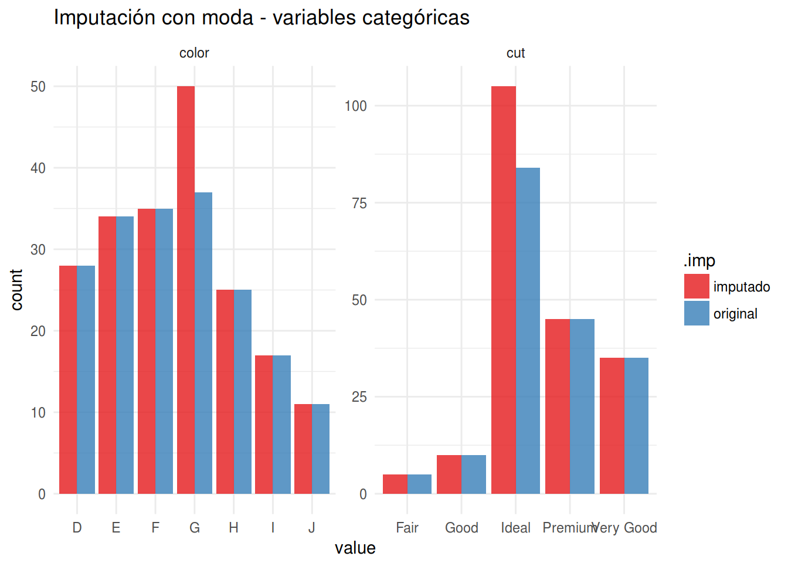

Imputación de datos
Imputación de datos en R
Introducción
Estás preparado para aplicar todo el conocimiento para estrujar esa base, pero te encuentras con un problema… Faltan datos. Casos incompletos, escalas sin pasar, dropouts, o que el pobre desgraciado del interno asignado para pasar los datos al ordenador era un poco vago… Pues en ciencias y sobretodo en las ciencias de la salud, lo más común encontrar bases de datos incompletas. Por otra parte, la mayoría de los análisis estadísticos requieren que casos completos por lo que hay que hacer algo con los valores ausentes (NA’s).
Una alternativa fácil es eliminar los NA’s. Ya está!, fuera con todos los casos incompletos y palante… pero esto tiene dos problemas. 1. A menos número de casos disminuye la potencia del estudio, y esto no es bueno, no? 2. Hay un sesgo de selección si es que la falta de datos tiene relación con alguna de las variables relevantes (dependientes o indepes)
Pues ¿qué diablos hacemos entonces? Podemos imputar los datos que faltan, que no es un insulto… a continuación intentare dar alguna pincelada de técnicas para imputar los datos faltantes en una base..
Análisis exploratorio de NA’s
El primer paso como en cualquier trabajo de análisis de datos decente, implica un análisis exploratorio de los NA. En R esto esto se consigue fácil y de manera gráfica con a librería VIM.
# cargamos las librerías necesarias
pacman::p_load(tidyverse, VIM, lattice, missForest, mice)set.seed(41)
# creamos un patrón aleatório de NA
mis_datos <-
diamonds %>%
sample_n(200) %>%
prodNA(noNA = 0.08)
mis_datos %>%
aggr(col=mdc(1:2), numbers=F, sortVars=T,
cex.axis=.8, gap=3, only.miss = F, combined = F,
ylab=c("Proportion of missingness","Missingness Pattern"))##
## Variables sorted by number of missings:
## Variable Count
## cut 0.105
## table 0.100
## x 0.095
## y 0.095
## depth 0.075
## price 0.075
## z 0.075
## color 0.065
## clarity 0.060
## carat 0.055La función VIM::aggr permite tener una representación gráfica de los NA y permite ver el patrón que estos presentan.
Tipos de NA’s
Se pueden establecer tres tipos de patrones de valores ausentes: 1. NA totalmente aleatorio (“missing completely at random, o MCAR”) en el que no hay un patrón establecido. El evento por el que hay un valor ausente es independiente de las variables observadas u otros parámetros de interés. Como sospechais es el patrón menos habitual…
NA aleatorio (“missing at random, o MAR”), en el cual la ausencia de datos no completamente aleatoria, pero en la que se puede dar cuenta de la información faltante con los datos existentes, es decir, en la que se puede hacer una estimación coherentes de los datos faltantes.
NA no aleatorio (“missing not at random o MNAR), en el que hay una relación directa entre el motivo de la ausencia de datos y su propio valor.
Cantidad de NA’s
% de NA
Cualquier técnica de imputación requiere de que los NA’s sigan un patrón MCAR o MAR. En casos en los que el patrón de NA’s siga un patrón de MNAR, hace necesario que posteriormente se deba hacer un análisis de sensibilidad para valorar la influencia de la imputación en el grado de incertidumbre del modelo generado. Si bien no es física cuántica, se lo parece, y si queréis adentraros en el tema hay una viñeta del paquete mice que trata de ello.
Métodos de imputación de datos
Tendencia central
Una primera alternativa, la de toda la vida, es imputar con algún estadístico de tendencia central (media, mediana, moda). Es decir, cambiamos todos los NA por el promedio de los datos que si tenemos. ¿Ventajas? Fácil de hacer. ¿Problema? estamos disminuyendo artificialmente la variabilidad de la muestra. La implementación en R es relativamente fácil como se muestra a continuación, utilizando el universo de librerías tidyverse.
# función para calcular la moda estadística
calc_moda <- function(x) {
z <- table(as.vector(x))
names(z)[z == max(z)]
}
imp_media <-
mis_datos %>%
# media para variables numéricas
mutate_at(
vars(carat, depth:z),
funs(ifelse(is.na(.), mean(., na.rm = T), .))) %>%
# moda para variables categóricas
mutate_at(
vars(cut:clarity),
funs(as.ordered(ifelse(is.na(.), calc_moda(.), as.character(.)))))Revisión visual de imputaciones
Con los datos imputados podemos ver gráficamente cuánto se ajusta nuestro invento con la base original.
mis_datos$.imp <- "original"
imp_media$.imp <- "imputado"
imp_media %>%
rbind(mis_datos) %>%
select(carat, depth, price, z, .imp) %>%
gather(key, value, -.imp) %>%
ggplot(aes(x = value, color = .imp))+
geom_density(size=0.8) +
facet_wrap(~ key, scales = "free") +
scale_color_brewer(type = "qual", palette = 6, direction = 1) +
theme_minimal() + labs(title="Imputación con media aritmética - variables numéricas")
imp_media %>%
rbind(mis_datos) %>%
select(color, cut, .imp) %>%
gather(key, value, -.imp) %>%
na.omit() %>%
ggplot(aes(x = value, fill = .imp))+
geom_bar(alpha = 0.8, position = position_dodge()) +
facet_wrap(~ key, scales = "free") +
scale_fill_brewer(type = "qual", palette = 6, direction = 1) +
theme_minimal() + labs(title="Imputación con moda - variables categóricas")
Es fácilmente apreciable como tanto en las variables numéricas como en las categóricas, la tendencia central está exagerada y se aleja de la distribución original.
Imputación múltiple
Una de las metodologías más utilizadas para la obtención de una muestra imputada más correcta es la que utiliza técnicas de imputación múltiple, es decir imputar más de una base de datos. Esto permite utilizar las n bases imputadas para hacer n modelos, que posteriormente se poolean (lo siento, no se como diablos se traduce eso…) con la ventaja de que el modelo final da cuenta de la incerteza del modelo.
La mayoría de las librerías permiten calibrar bastante la generación de la imputación, además de la metodología utilizada. Uno de los paquetes mejor documentados y de moda es el mice
El proceso es relativamente fácil y está muy bien documentado en las viñetas. El método de imputación por definición es el predictive mean matching para variables numéricas, logistic imputation para categoriales binarias y polytomous regression imputation para categoriales de más de dos factores. Para la utilización se usa la función mice que genera un objetos mids con las n bases imputadas. La librería trae además varios metodos para utilizar directamente los objetos mids en modelos estadísticos como regresiones lineales.
Funciona mejor o no? Pues lo miramos gráficamente…
pacman::p_load(mice)
imp_mice <- mice(select(mis_datos, -.imp))##
## iter imp variable
## 1 1 carat cut color clarity depth table price x y z
## 1 2 carat cut color clarity depth table price x y z
## 1 3 carat cut color clarity depth table price x y z
## 1 4 carat cut color clarity depth table price x y z
## 1 5 carat cut color clarity depth table price x y z
## 2 1 carat cut color clarity depth table price x y z
## 2 2 carat cut color clarity depth table price x y z
## 2 3 carat cut color clarity depth table price x y z
## 2 4 carat cut color clarity depth table price x y z
## 2 5 carat cut color clarity depth table price x y z
## 3 1 carat cut color clarity depth table price x y z
## 3 2 carat cut color clarity depth table price x y z
## 3 3 carat cut color clarity depth table price x y z
## 3 4 carat cut color clarity depth table price x y z
## 3 5 carat cut color clarity depth table price x y z
## 4 1 carat cut color clarity depth table price x y z
## 4 2 carat cut color clarity depth table price x y z
## 4 3 carat cut color clarity depth table price x y z
## 4 4 carat cut color clarity depth table price x y z
## 4 5 carat cut color clarity depth table price x y z
## 5 1 carat cut color clarity depth table price x y z
## 5 2 carat cut color clarity depth table price x y z
## 5 3 carat cut color clarity depth table price x y z
## 5 4 carat cut color clarity depth table price x y z
## 5 5 carat cut color clarity depth table price x y zimp_mice %>%
complete(action = "long") %>%
select(-.id) %>%
rbind(mis_datos) %>%
select(carat, depth, price, z, .imp) %>%
gather(key, value, -.imp) %>%
ggplot(aes(x = value, color = .imp))+
geom_density(size = 0.8, alpha = .8) +
facet_wrap(~ key, scales = "free") +
scale_color_brewer(type = "seq", palette = 8) +
theme_minimal() + labs(title="Imputación con media aritmética - variables numéricas")## Warning: Removed 56 rows containing non-finite values (stat_density).
imp_mice %>%
complete(action = "long") %>%
select(-.id) %>%
select(color, cut, .imp) %>%
gather(key, value, -.imp) %>%
ggplot(aes(x = value, fill = .imp))+
geom_bar(alpha = 0.8, position = position_dodge()) +
facet_wrap(~ key, scales = "free") +
scale_fill_brewer(type = "seq", palette =8) +
theme_minimal() + labs(title="Imputación con moda - variables categóricas")## Warning: attributes are not identical across measure variables;
## they will be dropped
Se ajusta mejor ¿no? y eso que no fue necesario tocar los parámetros por definición y con sólo 5 iteraciones. El paquete mice tiene un montón de funciones para ajustar el modelo de predicción. Además de los modelos por definición, mice acepta varios tipos de modelamiento, incluyendo modelos bayesianos, análisis lineal discriminante, y modelos de aprendizaje de máquinas más complejos como el Random Forest.
Si les interesa esta aproximacion metanse a leer las viñetas, que están super bien explicadas. Si están pirados, hay un libro del autor (Van Buuren, S.).
Imputación simple o múltiple para PCA
Un problema de las imputaciones múltiples es que dependiendo del trato que daremos a los datos, puede no haber un método estandarizado para lidiar con ellos. Es el caso del análisis de componentes principales (PCA) donde no está muy bien establecida una metodología para lidiar con los NA y donde no hay un método específico de la librería mice. Una aproximación útil es la de utilizar es la librería missMDA, un compañero de la excelente librería para PCA FactoMineR de François Husson, Julie Josse y Sébastien Lê
missMDA permite la imputación de datos de tal manera de que los valores imputados no tengan mayor repercusión en el resultado del PCA utilizando métodos de reducción de la dimensionalidad (para más detalles de cómo lo hace, espabilar y mirar la documentación).
En resumen el método se aplica así::
1. calcular el número de dimensiones a utilizar para la imputación con la función estim_ncpPCA.
2. Completar la base utilizando el número de dimensiones calculada con imputePCA.
3. Visualizar de manera gráfica la incertidumbre de la imputación con la función MIPCA.
En el siguiente ejemplo utilizamos una base más apropiada para PCA. Utilizamos la base geno del paquete missMDA que contiene información de genotipos y ambiente de cultivo, con NA’s
library(missMDA)
data(geno)
nb<-
geno %>%
estim_ncpPCA(ncp.max=10)## Warning in impute(X, ncp = ncp, scale = scale, method = method, threshold =
## threshold, : Stopped after 1000 iterationsimp_MDA <-
geno %>%
imputePCA(ncp = nb$ncp) %>%
purrr::pluck(1) %>%
as.tibble()
check_MDA <-
geno %>%
MIPCA(ncp=nb$ncp, nboot = 100)
plot(check_MDA)